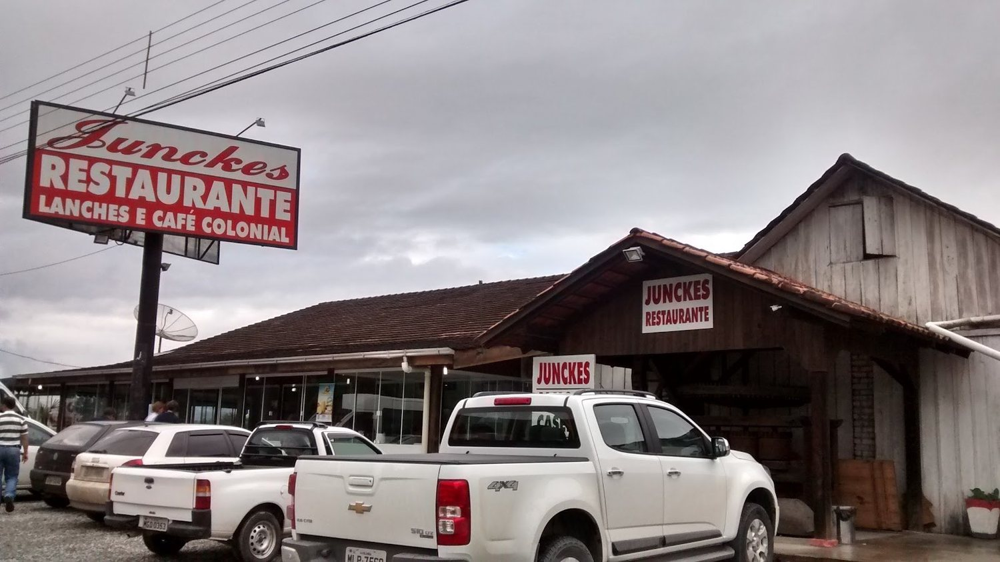
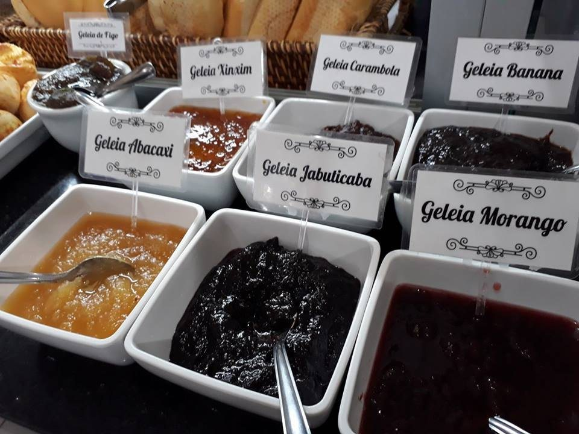
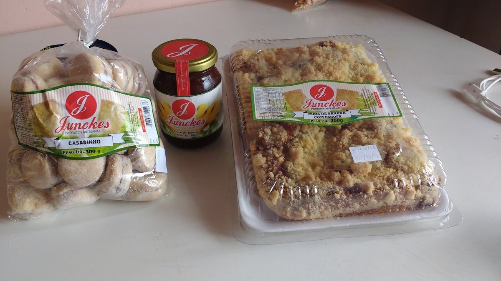
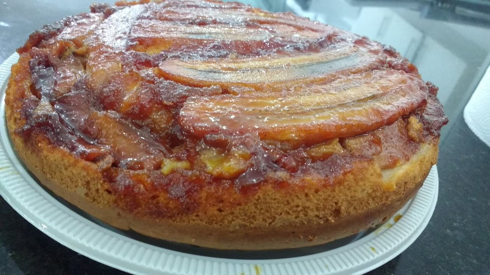
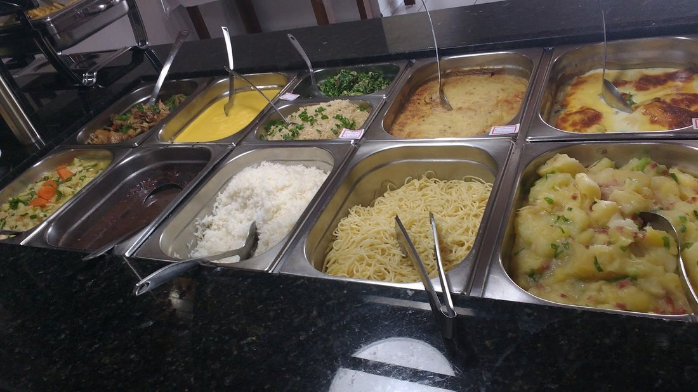
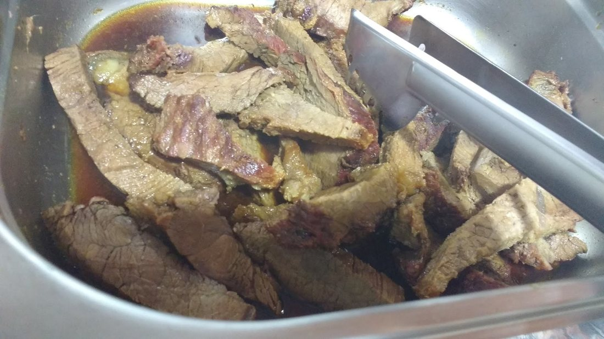
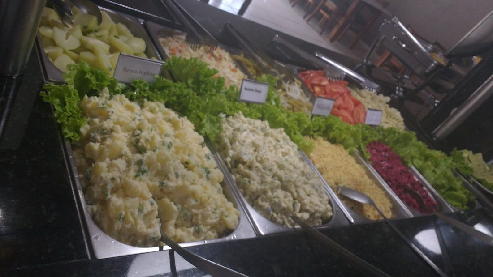
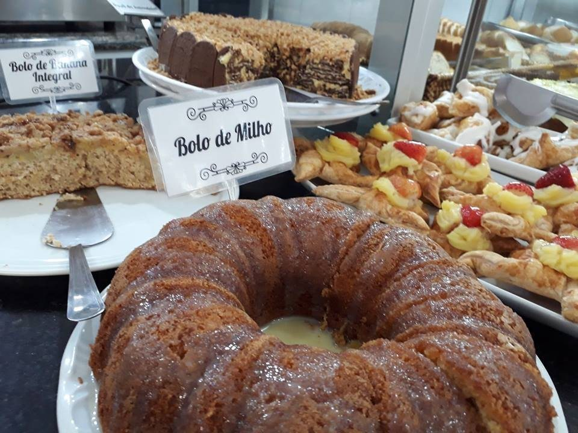
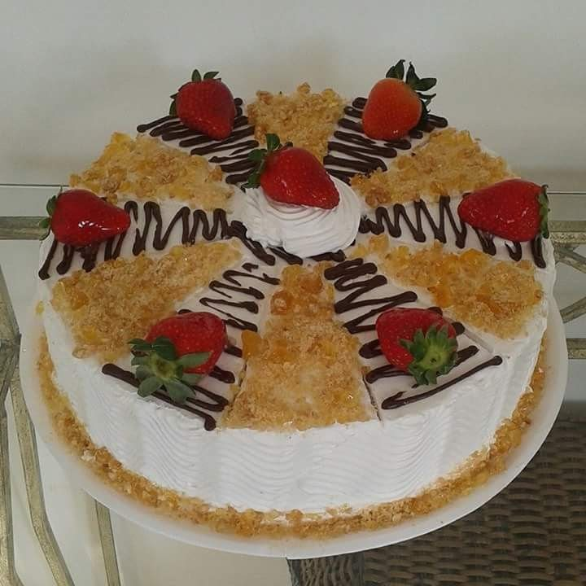
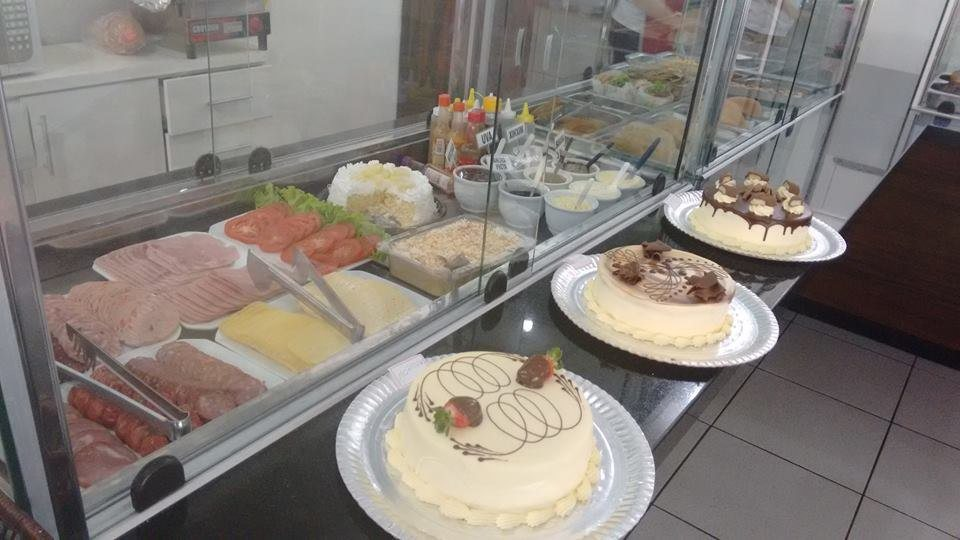

BR-470 km 40 · Gaspar/SC
Desde as 5h30, café colonial na beira da 470.
- Café coloniala partir das 5h30
- Almoçobuffet, fogão à lenha
- Café da tardebolos, tortas e cucas

Pães caseiros, cucas e geleias de fabricação própria logo cedo; almoço com fogão à lenha. Fica no sentido da BR-101, no caminho de quem desce para a praia.
O que tem na parada
-
Café da manhã colonial
a partir das 5h30
Pães caseiros, cucas e geleias de fabricação própria.
-
Almoço
buffet com fogão à lenha
Comida caseira; clientes citam comida alemã e chucrute. Valor: consulte no local.
-
Café da tarde
café da tarde colonial
Bolos, tortas e cucas na vitrine, para a pausa da viagem.
Horário
- Seg a sex
- 5h30 – 20h
- Sábado
- 5h30 – 19h*
- Domingo
- fechado
*Horário do Google. Uma matéria de 2020 falava em 20h aos sábados: confirme por telefone.
Da geleia ao restaurante
- 2005Começa a produção de geleias.
- 2010Cinco anos depois, abre o restaurante.
- 2020“vendemos 100 pães e 50 pedaços de cuca por dia”Jornal Metas, 19/06/2020
- hojeCafé colonial, almoço e café da tarde, de segunda a sábado.
Catálogo colonial
Geleias, cucas e biscoitos com rótulo próprio. Os sabores abaixo estão nas plaquinhas da vitrine da casa.
Disponibilidade, venda para levar e preços: a confirmar com a loja.
- geleiaFigo
- geleiaXinxim
- geleiaCarambola
- geleiaBanana
- geleiaAbacaxi
- geleiaJabuticaba
- geleiaMorango



Celular da casa: (47) 98416-1148 (se atende WhatsApp: a confirmar).
No buffet e na vitrine






4,5 no Google, com 666 avaliações
“Sempre que Desço pra praia passo almoçar aqui…”
Alexsandra, abr/2026“Ótimo atendimento,comida muito boa e café bem no estilo colonial,recomendo”
destaque do Google“Tudo muito fresco, muitas opções de pratos e sobremesas!”
destaque do Google
SAÍDA
BR-470, km 40 · Gaspar/SC
Sentido BR-101, no caminho para a praia. Estacionamento no local.
- Telefone fixo(47) 3397-0904
- Celular(47) 98416-1148
- E-mailjunckescafecolonial@hotmail.com
- Pagamentoaceita cartões